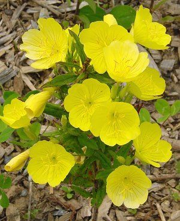

Coreopsis is a cheerful yellow flower that happens to be native to Iowa. It keeps pollinators happy and brings plenty of sunny cheer from early summer through fall. There are over 100 varieties of coreopsis, including both perennial and annual types. They are also available in a wide range of colors, from vibrant bright yellow to rich orange and deep red, if you’d like to experiment with an even broader spectrum!
| Back to home page |
|  |